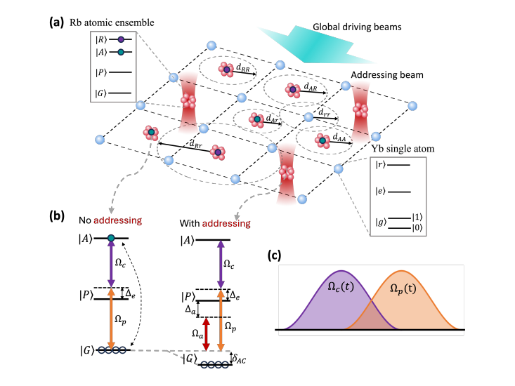

Fast and Reconfigurable Readout for Atom-Array Quantum Processors Using Tunable Microlens Arrays

- Authors
- Francesco Gaudio, Lorenzo Matteo Salvatori, Siqing Han, Tommaso Bonfanti
- Supervision
- Luis Martinez Fernandez, Yannick Bertschy
Summary
Readout is a key bottleneck for neutral-atom quantum processors. Electrically tunable microlens arrays (SmartLenses, developed at the Nanophotonics Systems Laboratory) could enable fast, spatially selective atom addressing. In this project we simulate, design and characterise an optical setup based on these devices, for integration into the neutral-atom hardware of the Experimental Quantum Engineering group (ETH–PSI).
My part is optimising the SmartLens design and its integration on the setup.
The project is ongoing. For more details, contact me.